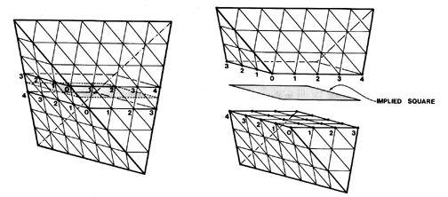

|  |
| Fig. 527.08 Assembly by Convergence and Divergence: A regular tetrahedron may be divided into two identical halves by an implied square section. The two halves may be separated and reassembled by precessional rotation. This is an illustration of rotational symmetry. (See Fig. 417.01 and Loeb Contribution L.) For other examples of the evolution of "Chef's Cap" polyhedra, see Figs. 100.103 and 987.23B. |